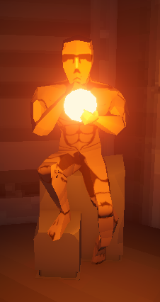

UltrakillRemake

About
This is a remake of the game Ultrakill.
Movement

In this project i was in charge of the movement. The movement in ultrakill is very fast and fluid. We chose to implement the jump, dash, slide, goundpound and wallrun mechanics. The main focus of the movement was to make it feel as close to the original as possible. I also was the Lead Dev. I helped artists with implementing their art and helped with some of the other mechanics. I also helped a lot with comunication and planning to keep everyone on the same page.
Learned
This was the project where i really learned how important the main mechanic like movement is. It might be something small that people do not notice how much time go's into it, but you really have to get that mechanic feeling correct otherwise it can really disrupt the player.'
Extra Info
Devs: 3 Artists: 4 Current Development time: 2 month Engine: Unity This game is finnished.